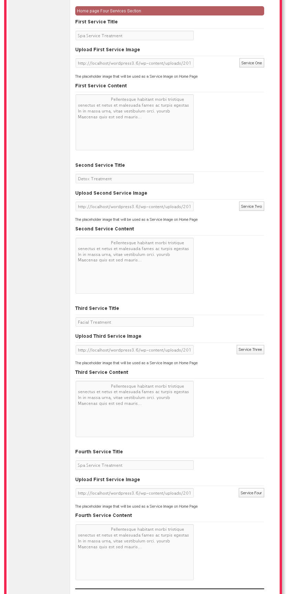

SpaSalon Theme Documentation
First of all I would like to thank you for downloading this Wordpress theme.All the php code block are self explanatory ,For better features and addtional templates UPGRADE to the Pro Version . for any queries, will be there, So Dont worry
Installing the theme
- Download and unzip the theme package into the worpress' themes folder .
- Go to Admin Panel->Appearance->Themes Now Activate The Spa Salon Theme .
Now Enjoy the new World of Freshness...
On Activation we had tried to fill all the areas by default informaitons.So that one can easily make
out the area's user can edit, dynamically .
Files and Directory Structures
Directories
- Css FolderIncludes all the css files found in this theme .
- Images FolderThis incules all the images found in this theme .
- Scripts FolderIncludes all the jquery scripts of theme .
- FunctionIncludes all the excerpt and pagination .
- OptionPanelFor Permission's and Right's available in this theme .
Page Templates
- Featured Home Pageindex.php
- Full Width pagefullwidthpage.php
- Blog Pageblog.php
- Contact Us Pagecontact.php
Important: Theme support is provided to help with any issues, such as bugs or incompatabilities of the theme purchased as well as any futher explanation of a function if you have not quite understood something here in the documentation file. Theme support does not include any sort of customizations for you or your client, so please try and refrain from opening tickets with these requests. Thanks!
Cascading Stylesheet
SpaSalon theme has following stylesheets.All the css are well documented .
- Basic Theme Cssstyle.css
- Slider Cssflexslider.css
- Bootstrap Cssbootstrap.css
- Bootstrap Responsive Cssbootstrap-respnsive.css
- Docs Cssdocs.css
- Eighty_Twenty2c28 Csseighty_twenty2c28.css
- Font Related Cssfont.css(css/font folder)
Script Files Used
Below find all the javascript files present in the theme .
- Jquery Libraryjquery-1.3.min.js
- Bootsrapbootstrap-min.js
- Bootbusinessboot-business.js
- Menumenu.js
- Farbtasticfarbtastic.js
- Jquery JCarousel jquery.jcarousel.min.js
- Jquery Pickachoose jquery.pikachoose.min.js
- Flex Sliderjquery.flexslider.js
- Flex Slider Settingflexslider-setting.js
Setting up the theme
- To Change the Logo of the theme Go To Apperance->OptionPanel->Genral.You can select your best in the given field(s) .
Option Panel Setings
Go To->Admin->Apperance->Option Panel
{kind=link}
Page Template
This theme has a variety of built-in page template's,You can use those template according to your need . Go To ->Pages ->Add New
Select The Page Template .
Home Template
- To Change the Logo of the theme Go To Apperance->OptionPanel->Genral.You can select your best is the given feild(s) .
- To Add Menu(s) in the Home Page Go To Apperance->Menus.You can set your menus .
- To set TagLine for your theme Go To->Apperance->OptionPanel->Home
- To change the images(thumbnails) of the Featured_Home Template .
Go To Apperance->OptionPanel->Home . - Pink Strip Settings
- To change the description and banner of the pink strip of the Featured_Home .
Go To Apperance->OptionPanel->Home . - Home Image and Thumbnails Settings
- To change the home page image and thumbnail of the of the Featured_Home .
Go To Apperance->OptionPanel->Home . - To change the home page image and thumbnail of the of the Featured_Home .
Go To Apperance->OptionPanel->Home . - Home Page Services Settings
 - To change Services of the of the Featured_Home .
Go To Apperance->OptionPanel->Home . - Home Page Products
- To change Products of the of the Featured_Home .
Go To Apperance->OptionPanel->Home .
{kind=link}
{kind=link}
{kind=link}
{kind=link}
Blog Template
- To show all your blog post .
- You can add images with editor and featured image (post thumbnail) .
Full Width Template
- A full width detailed page .
Contact Us Page Template
- A cotact form .
- Static Address .
Resources Used
The following resources where used in the development of this theme:
- jQuery - http://jquery.com/
- Twitter Bootstrap - http://twitter.github.io/bootstrap/
- WordPress - http://wordpress.org/
- Pickachoose-jQuery Slider - http://pickachoose.com//
- Flex Slider - https://github.com/woothemes/flexslider
- Montserrat Fonts - http://www.google.com/webfonts/
- Picasa Fonts - http://picasa.google.com/
- Droid Serif Fonts - https://www.google.com/webfonts/specimen/Droid+Serif/
- Droid Sans Fonts - http://www.google.com/webfonts/specimen/Droid+Sans
- Flickr Photos - http://www.flickr.com/photos/
- Self Intro Video - http://www.youtube.com/embed/W6OvKgruP8M
- Font Awesome - http://fortawesome.github.com/Font-Awesome/
- Slider Images - http://www.wpexplorer.com/shine-wordpress-theme
- Picasa Icons - http://www.iconfinder.com